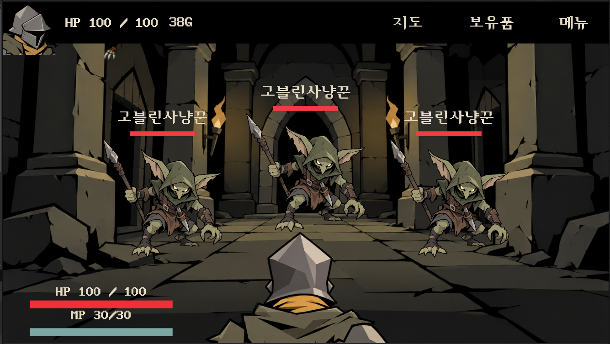
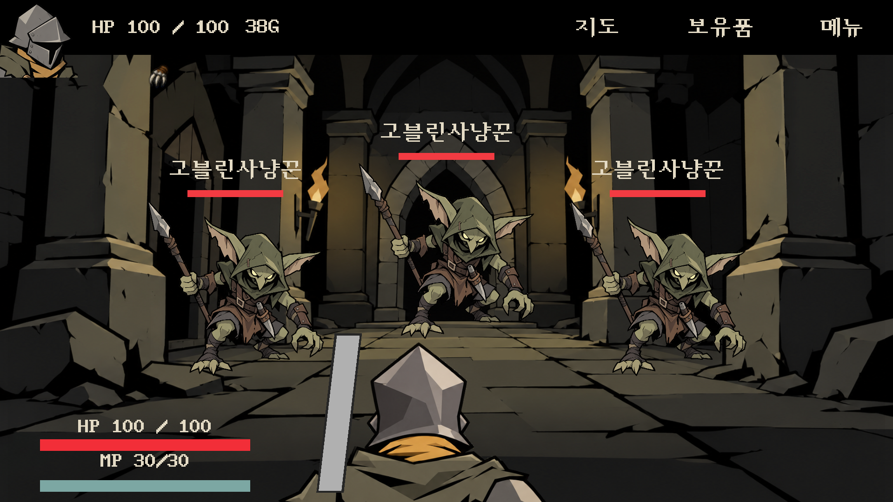
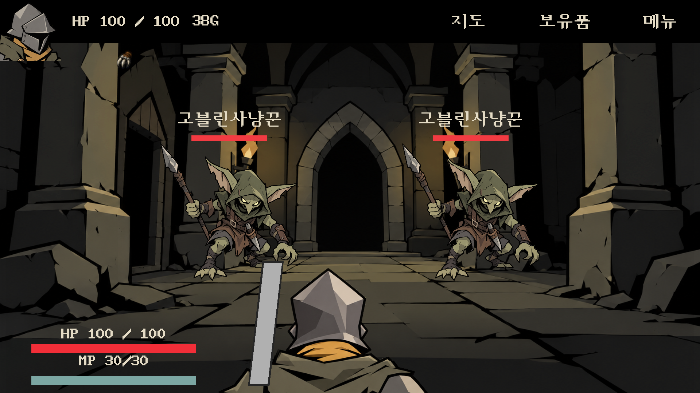
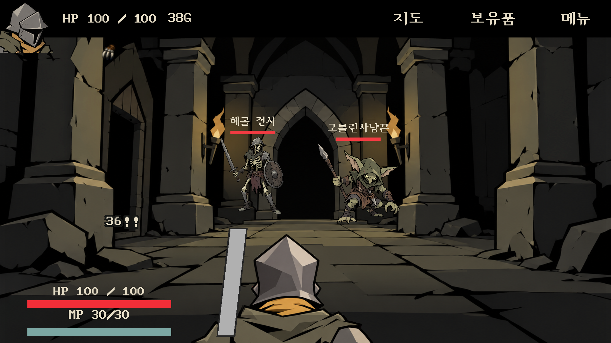
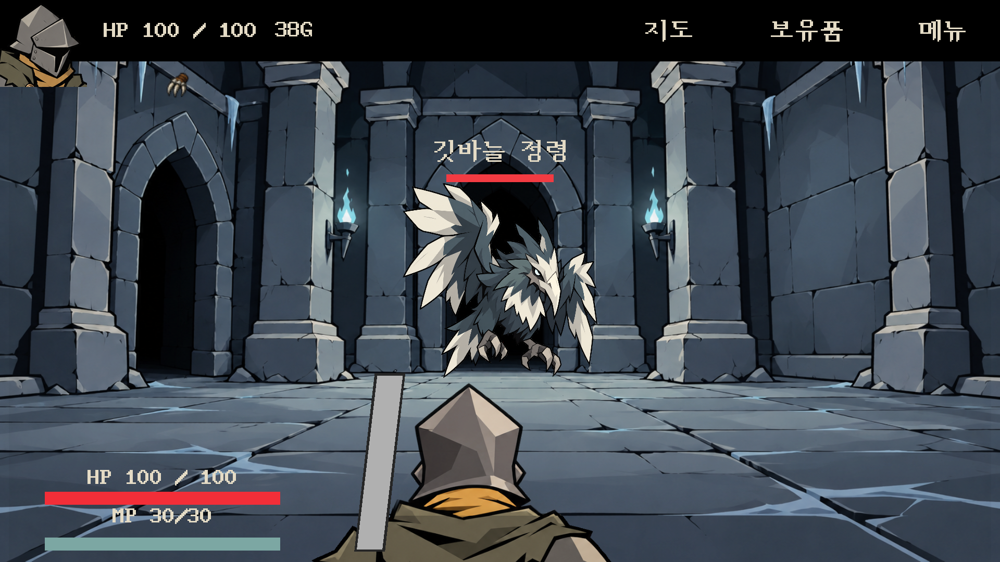

사용자가 제공한 목표 구도

수정한 실제 기본 배치 · Unity 실행

이전 · 높이 보정 때문에 떠 있던 배치

기본 2마리 배치

기존 개별 encounter 배치 유지

비행형 고유 위치 보정 유지

공통 Root (0,0) · 기본 3마리: 좌 (−370,−65), 중앙 (0,0), 우 (370,−65). 개별 encounter/종류의 오프셋은 별도 유지.




